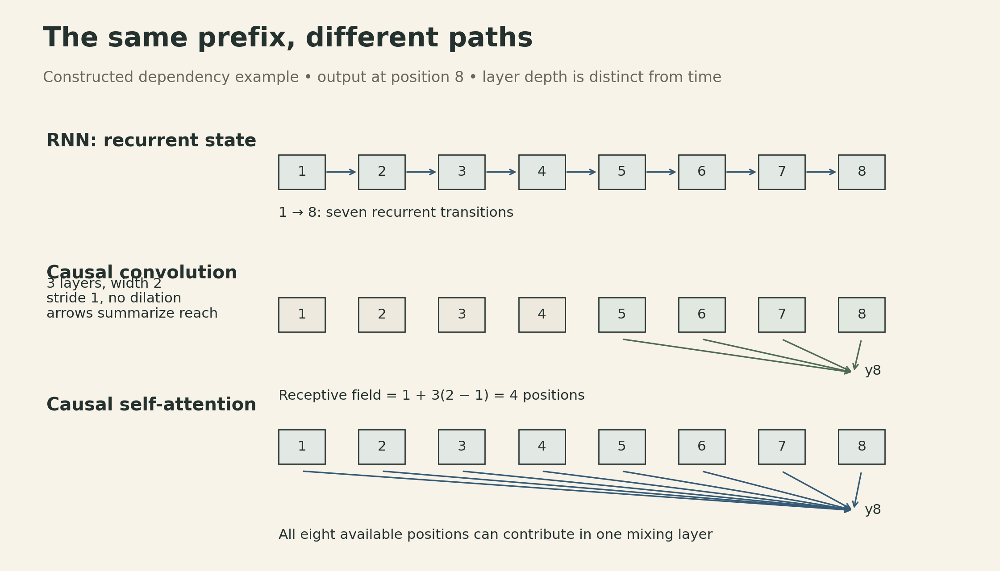
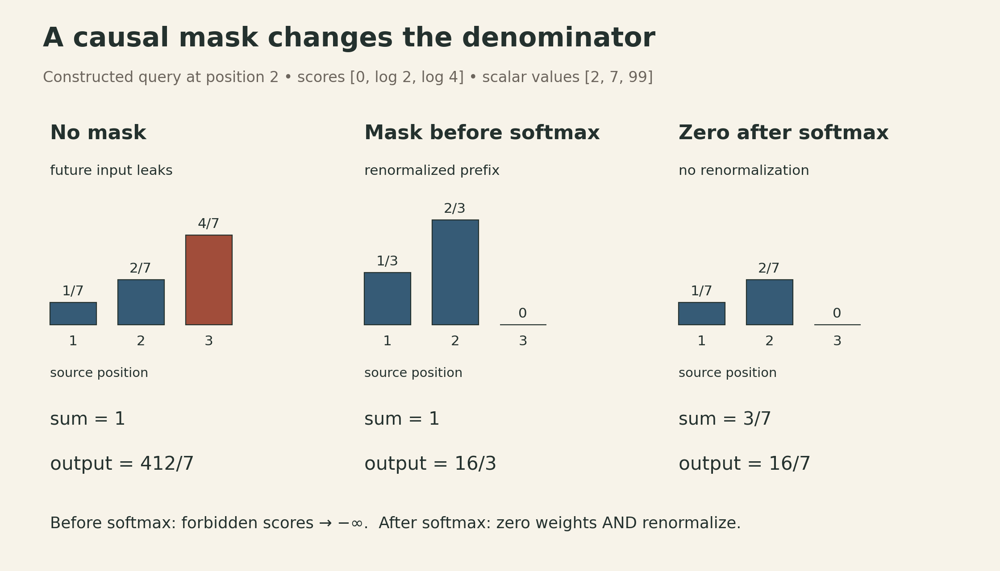
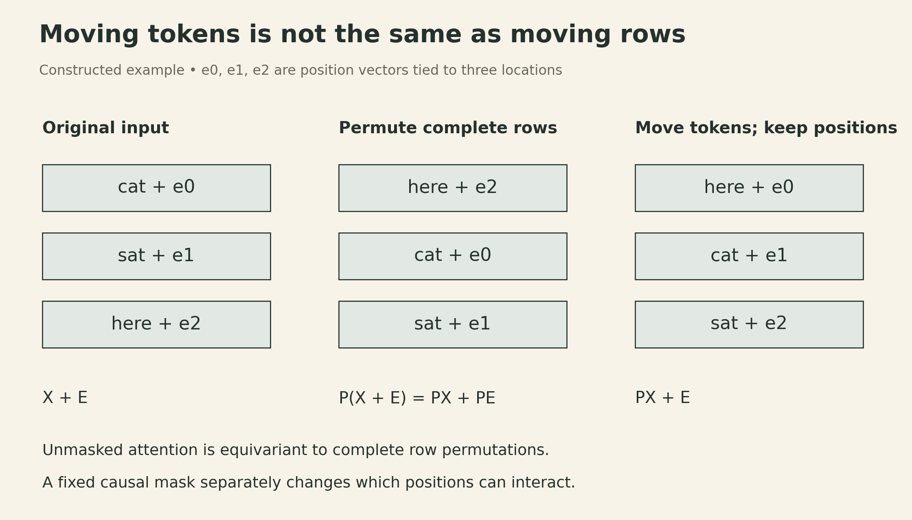

A Causal Mask Controls What a Transformer Can See
A model predicting the next word can be wrong in a surprisingly quiet way: it can produce a low training loss because a future word has already entered its hidden representation. Self-attention makes that mistake easy. Its default operation mixes every input position with every other position.
A causal mask restricts that mixing. Positional information answers a different question: where does a token occur? Keeping those two jobs separate makes the Transformer easier to understand—and makes its training setup easier to check.
This article follows the CMU Deep Learning Systems lecture on Transformers and attention, listed as Lecture 17 in the current course sequence. The linked recording is from the 2022 course and carries the older number Lecture 20. The numerical examples below are constructed calculations, not model-training results.
A recurrent state and a direct predictor keep history differently
In a causal sequence task, the prediction at position \(t\) may depend on \(x_1,\ldots,x_t\), but not on later inputs. An RNN implements this with a recurrent state:
\[ h_t=f_\theta(h_{t-1},x_t),\qquad \widehat y_t=g_\theta(h_t). \]
The same fixed-size state can be updated indefinitely. That is a statement about the architecture’s reach, not a guarantee that it stores an arbitrarily long history accurately. Earlier information must pass through successive state updates; learning to retain it can be difficult.
A direct predictor instead constructs \(\widehat y_t\) from representations of the available input sequence. It need not route every earlier input through the immediately preceding recurrent state. Temporal convolutions and self-attention both fit this description, but they give information different paths through the network.
For example, a stride-one causal convolution with kernel width \(k\) can be written
\[ z_t^{(\ell+1)}=\sigma\!\left(b^{(\ell)}+ \sum_{r=0}^{k-1}z_{t-r}^{(\ell)}W_r^{(\ell)}\right). \]
Here each \(z_t\) is a row vector, and missing positions before the sequence start are padded. With no dilation or pooling, stacking \(L\) such layers gives a receptive field of
\[ R=1+L(k-1). \]
A width-two, three-layer network therefore reaches four positions, not an unlimited history. Dilation expands that reach without adding kernel taps: at stride one with layer dilations \(d_1,\ldots,d_L\), the receptive-field span is \(1+(k-1)\sum_\ell d_\ell\). The locations actually connected depend on the dilation schedule; a wide span alone does not establish dense coverage.

Shorter paths do not guarantee better predictions. They change how information can travel. Likewise, a fixed parameter count does not imply fixed compute or memory as the sequence grows.
Attention first chooses weights, then combines values
The lecture introduces attention before building a Transformer. Given RNN states \(h_t\), one possible sequence summary is
\[ a_t=\frac{\exp(u^\top h_t)}{\sum_s\exp(u^\top h_s)}, \qquad \bar h=\sum_t a_t h_t. \]
The classifier can use a weighted combination of all states rather than relying only on the final state. This still uses an RNN to produce those states. An attention-based summary is not, by itself, a Transformer.
Self-attention gives each output position its own combination. Let \(X\in\mathbb R^{T\times d_{\rm model}}\), with one input representation per row. Using the conventional notation from Attention Is All You Need, §3.2, form
\[ Q=XW_Q,\quad K=XW_K,\quad V=XW_V, \]
where \(Q,K\in\mathbb R^{T\times d_k}\) and \(V\in\mathbb R^{T\times d_v}\). Then
\[ S=\frac{QK^\top}{\sqrt{d_k}},\qquad A=\operatorname{softmax}_{\rm row}(S),\qquad O=AV. \]
The score matrix \(S\) and weight matrix \(A\) are \(T\times T\); the output \(O\) is \(T\times d_v\). The projections act independently on rows. The product \(AV\) is where positions are combined:
\[ O_i=\sum_{j=1}^{T}A_{ij}V_j,\qquad A_{ij}=\frac{\exp(S_{ij})}{\sum_{r=1}^{T}\exp(S_{ir})}. \]
For finite scores, the coefficients are positive and sum to one. Thus each head’s value combination is a convex combination before any output projection or residual addition. The entire Transformer block is not restricted to that convex hull.
The recording writes the score product as \(KQ^\top\) and calls the first argument \(K\). We use \(Q\) for the output-row side and \(K\) for the source-position side throughout this article. Relabeling the two learned projection families reconciles these conventions. Transposing a fixed score matrix does not generally preserve its row-softmax output.
The scale \(1/\sqrt{d_k}\) has a useful statistical motivation. If the components of \(q\) and \(k\) are independent, zero-mean, unit-variance variables, the variance of \(q^\top k\) is \(d_k\). Dividing by \(\sqrt{d_k}\) keeps that variance at one under those assumptions. Learned representations need not satisfy them exactly; this is motivation for the scale, not a guarantee about every trained attention map.
The mask must affect the normalization
Unmasked attention allows output row \(i\) to use every \(V_j\). For a causal sequence, define an additive mask
\[ M_{ij}=\begin{cases}0,&j\le i,\\-\infty,&j>i.\end{cases} \qquad A=\operatorname{softmax}_{\rm row}(S+M). \]
Now the upper triangle has zero weight. Each row is normalized over its allowed prefix:
\[ A_{ij}=\frac{\exp(S_{ij})}{\sum_{r=1}^{i}\exp(S_{ir})} \quad(j\le i),\qquad A_{ij}=0\quad(j>i). \]
Consider the second query in a three-position sequence. Choose its natural-log scores as \([0,\log2,\log4]\) and scalar values as \([2,7,99]\). Without masking, the weights are \([1/7,2/7,4/7]\), and the output is \(412/7\approx58.857\). Most of that result comes from the forbidden third position.
Masking before softmax gives
\[ \operatorname{softmax}([0,\log2,-\infty])=[1/3,2/3,0], \qquad O_2=\tfrac13\cdot2+\tfrac23\cdot7=\tfrac{16}{3}. \]
Simply zeroing the last coefficient after the original softmax leaves \([1/7,2/7,0]\). These sum to \(3/7\), and the output is \(16/7\), not \(16/3\). Post-softmax masking is equivalent only if the remaining weights are renormalized. Adding the mask first does both jobs in one normalization.

A padding mask and a causal mask express different exclusions and may need to be combined. Every evaluated row also needs at least one allowed key. A row of only negative infinities makes the mathematical normalization undefined; handling fully masked rows is an implementation choice, not something the formula silently solves.
A Transformer alternates mixing across positions and processing each position
A simplified single-head block can project attention back to the model width and use the lecture’s post-normalization arrangement:
\[ U=\operatorname{LN}\!\left(X+OW_O\right), \qquad Y=\operatorname{LN}\!\left(U+\operatorname{ReLU}(UW_1+b_1)W_2+b_2\right). \]
Here \(W_O\in\mathbb R^{d_v\times d_{\rm model}}\), \(W_1\in\mathbb R^{d_{\rm model}\times d_{\rm ff}}\), and \(W_2\in\mathbb R^{d_{\rm ff}\times d_{\rm model}}\); biases broadcast over rows. We omit dropout to expose the dependencies. Multi-head attention uses several projected attention operations and combines their outputs; the next implementation lecture develops those details.
Attention mixes positions. The feed-forward network then applies the same parameters independently to each row. Layer normalization here also works over features within each row, not across sequence positions. Residual addition, this normalization, and the rowwise MLP do not introduce future inputs on their own. If every mixing layer respects the causal boundary, stacking these blocks preserves it.
This follows the recording’s post-LayerNorm arrangement; the output projection and biases make the dimensions and parameterization explicit here. Other placements of normalization are different architectures; these equations should not be read as a specification of every present-day Transformer or library defaults.
Positions and masks provide different information
Without positions or a fixed mask, self-attention is permutation equivariant. Let \(P\) permute rows. With shared projection weights,
\[ Q'=PQ,\quad K'=PK,\quad V'=PV, \qquad S'=PSP^\top. \]
Rowwise softmax commutes with this consistent row-and-column permutation, so
\[ \operatorname{Attn}(PX)=P\operatorname{Attn}(X). \]
The outputs follow the reordered inputs; they are not necessarily unchanged. That distinction separates equivariance from invariance.
A position vector adds information tied to the location. For instance, with an even model width \(d\), the original Transformer uses
\[ E_{t,2r}=\sin\!\left(t/10000^{2r/d}\right),\qquad E_{t,2r+1}=\cos\!\left(t/10000^{2r/d}\right), \]
and combines it with the token representation. If tokens move while position vectors stay attached to their locations, the new input is \(PX+E\), generally different from \(P(X+E)\). This is how positional information changes the permutation argument. It does not guarantee successful extrapolation to arbitrary sequence lengths.

A fixed triangular mask also breaks arbitrary permutation symmetry: changing token order changes which tokens can reach which outputs. Therefore, the unmasked equivariance proof cannot be applied unchanged to masked attention. The mask supplies a directional access pattern; explicit position features supply additional location information.
Parallel training does not make autoregressive generation parallel
For next-token modeling, the intended factorization is
\[ p(x_1,\ldots,x_T)=\prod_{t=1}^{T}p(x_t\mid x_{<t}). \]
The original Transformer’s decoder description, §3.1, pairs masking with shifted outputs. One training convention feeds \([\mathrm{BOS},x_1,\ldots,x_{T-1}]\) and uses targets \([x_1,\ldots,x_T]\). The diagonal is allowed because input position \(t\) contains the preceding token, not its own target. Feeding unshifted targets at the same positions would leak the answer even with a lower-triangular mask.
During teacher-forced training, those input tokens are known. A masked forward pass can compute all position losses together. During ordinary left-to-right sampling, the next input token is not known until it has been selected, so token generation still proceeds sequentially.
A decoder can cache the keys and values of earlier positions at every layer to avoid recomputing them. That cache retains growing per-position state; it is not the fixed-size recurrent summary of an RNN. For standard multi-head attention with \(B\) sequences, \(L\) layers, \(H\) key/value heads of width \(d_h\), and \(s\) bytes per cached element, storing \(T\) positions of both K and V takes
\[ 2BLTHd_hs\ \text{bytes}. \]
This counts the cache tensors only; it excludes model weights, activations, allocator overhead, and other runtime memory. Different attention designs change the key/value-head count. This is an accounting extension of the lecture’s state-versus-history comparison, not a memory measurement.
Constant parameters can still mean quadratic work
For fixed representation widths, extending a self-attention sequence does not add projection parameters. But dense score formation and value mixing cost
\[ O(T^2d_k)+O(T^2d_v), \]
and an explicitly stored weight matrix has \(T^2\) entries per head. At \(T=4096\), one fp16 matrix occupies \(4096^2\times2=32\) MiB; at \(T=8192\), it occupies 128 MiB. These are tensor sizes, not total training memory or measured GPU usage. Projections and MLPs have their own costs, including terms proportional to \(T d_{\rm model}^2\) and \(T d_{\rm model}d_{\rm ff}\).
The recording explains the straightforward implementation that materializes the attention matrix. That storage pattern is not a mathematical requirement for exact attention: FlashAttention uses tiling and online softmax to avoid storing the full matrix in high-bandwidth memory. Dense exact attention still evaluates quadratic pair interactions. Avoiding intermediate storage does not turn that arithmetic into a linear-time algorithm, nor does it specify a particular speedup.
Similarly, a triangular dependency pattern does not by itself establish a twofold wall-clock improvement. Whether an implementation skips masked blocks, and how efficiently it does so, depends on its kernel and hardware.
The same mixing operation can serve images and graphs
The lecture closes by moving beyond time series. Image patches can play the role of sequence rows. A \(256\times256\) image has 65,536 pixel positions; dividing it into non-overlapping \(16\times16\) patches leaves 256 patch positions. Ignoring any extra classification token, the associated dense attention matrix has \(256^2=65{,}536\) entries instead of \(65{,}536^2=4{,}294{,}967{,}296\). This constructed count isolates the effect of tokenization; it says nothing by itself about accuracy.
A graph can contribute a hard connectivity mask or an additive structural bias. A hard mask forbids interactions; a finite bias changes their relative scores. The graph’s semantics determine whether direction, distance, or another relation should affect attention. Temporal causality is appropriate for forecasting, but should not be imposed automatically on an image-classification task.
The common architecture is a learned rule for combining available representations, followed by shared processing at each position. What counts as a position, which information is available, and how much work that mixing requires remain part of the model design.
Lecture and sources
- Official lecture video: latent-state versus direct prediction, causal convolutions, attention, Transformer blocks, masks, positions, and applications.
- Current DLSys lecture sequence: Lecture 17; the linked video is the Fall 2022 recording labeled Lecture 20.
- Vaswani et al., Attention Is All You Need: §3.1–3.5 for shifted decoder inputs, conventional attention notation, and sinusoidal positions.
- Dao et al., FlashAttention: the distinction between exact dense attention and materializing its intermediate matrix.